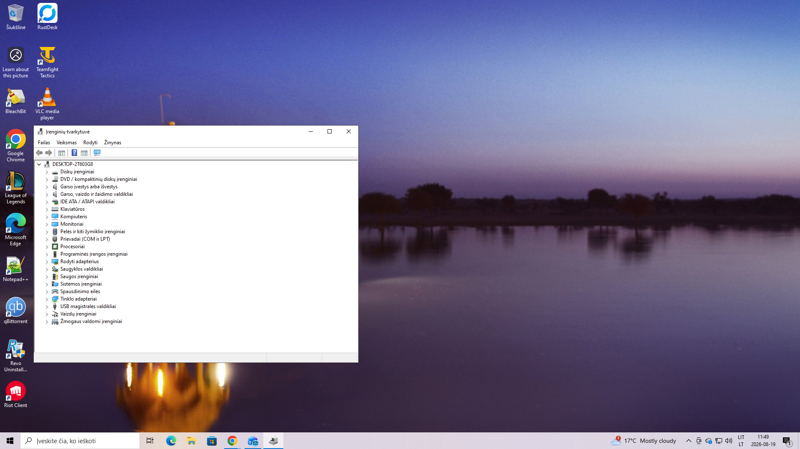

Sąžiningas meistras ir techninė pagalba Šilutėje
Sveiki! Esu kompiuterių meistras iš Šilutės. Technologijomis domiuosi nuo 1988 metų – nuo MS-DOS laikų iki šiuolaikinių Windows 11 sistemų.
Per šį ilgą laiką išmokau vieną paprastą dalyką: daugumą problemų galima sklandžiai sutvarkyti, jei pirmiausia surandama tikroji gedimo priežastis, o ne siūlomi brangūs ir nereikalingi sprendimai.

✓ Švarios, optimizuotos ir be klaidų veikiančios sistemos
Meistro kelias ir patirtis
Nuo pirmųjų programavimo bei technikos žingsnių iki profesionalaus serviso Šilutėje.
Pirmasis kontaktas
Pažintis su kompiuterine technika dar mokyklos suole, gilinimasis į MS-DOS pagrindus ir pirmąją skaitmeninę logiką.
Sistemų patirtis
Perėjimas per visas Windows operacinių sistemų kartas, gilus aparatinės bei programinės įrangos derinimas ir nuolatinis tobulėjimas.
PC IT Šilutė
Specializuotos vietinės paslaugos Šilutėje: švarus Windows diegimas, optimizavimas, gedimų šalinimas ir nuotolinė pagalba.
Mūsų darbo principas
Pirmiausia ieškome problemos priežasties, o ne priežasties parduoti naują kompiuterį ar brangias paslaugas. Jei neturite laiko vežti į vietą – susitarus galime parvežti atgal, o pagalba pasiekiama net ir savaitgaliais.
Turite klausimų ar norite pasikonsultuoti?
Susisiekite tiesiogiai per Messenger arba užpildykite užklausos formą.